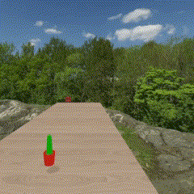
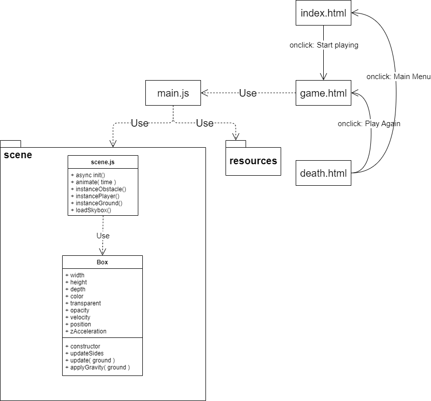
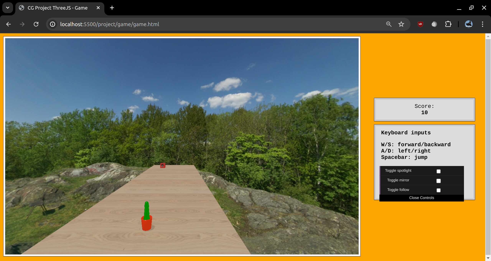
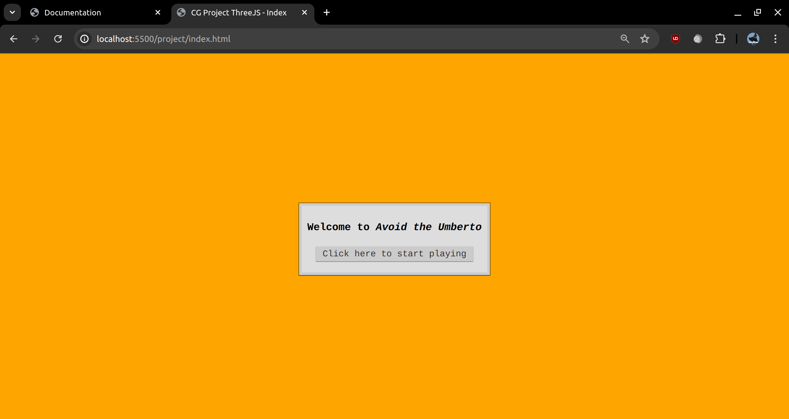
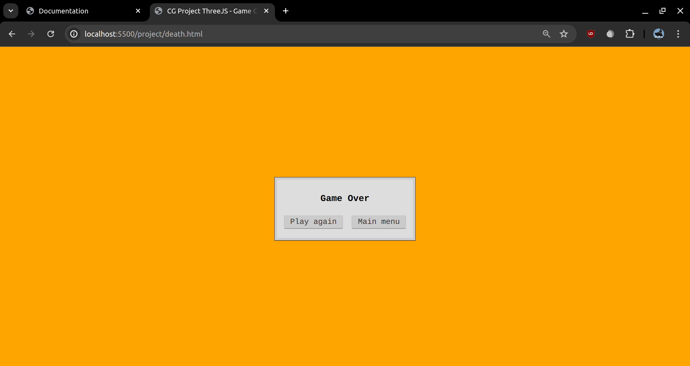
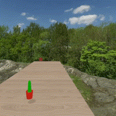
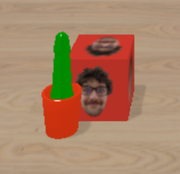
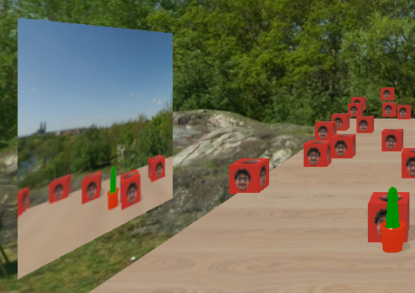

A.A. 2023-2024
Il seguente progetto è stato realizzato come prova
finale per il modulo 2 del corso di "Fondamenti di Computer
Graphics M" tenuto dal professor Casciola.
L'obiettivo è sviluppare un'applicazione web
interattiva utilizzando la libreria Javascript three.js,
che consente di realizzare scene più complesse scrivendo
meno codice rispetto al "semplice" WebGL.
L'applicazione risultante consiste di un semplice videogioco 3D
in cui la mesh controllata dal giocatore deve evitare altre
mesh ostacoli che si muovono verso di esso.
// da fare
L'architettura del progetto consiste di due package:

 L'interfaccia dell'applicazione è molto semplice: da una parte c'è il canvas su cui viene renderizzata la scena e dall'altra una colonna contenente: il punteggio, i comandi e un'istanza di dat.GUI per attivare alcuni effetti.
Inoltre sono presenti altre due interfacce di supporto, una per avviare il gioco e una per il game over.
 
Per gestire le diversi impostazioni è stata utilizzata la libreria dat.GUI.
La mesh del giocatore può essere controllata in due modi:

Per l'interazione con dispositivi dotati di schermo touch gli input sono gestiti prima interpretandoli e poi convertendoli nei corrispettivi input da tastiera.
Estende la classe THREE.Mesh
e rappresenta un basilare parallelepipedo,
si occupa dell'istanziazione dello stesso
e della gestione dei suoi parametri, in
primis il movimento.
Viene utilizzata anche come hitbox
per le mesh caricate in formato Wavefront OBJ,
rendendo il controllo delle collisioni meno
esoso.
Il costruttore prende in input diversi dati:
BoxGeometry delle
dimensioni date con MeshPhongMaterial
del colore, trasparenza e opacità date.
Ricalcola le posizioni delle facce.
La posizione di una faccia viene calcolata come
la posizione della mesh lungo un asse, a cui si
somma (o sottrare) la dimensione lungo l'asse.
// inserire immagine che spiega
// magari fatta con draw.io
Invoca il metodo updateSides e
aggiorna la posizione della mesh sommando a
essa le componenti della velocità e
dell'accelerazione.
Inoltre, controlla se il giocatore può far
saltare la mesh e applica la gravità.
Questo metodo incrementa la velocità della mesh
lungo l'asse y di una costante gravity.
Per aggiungere un po' di realismo è stato aggiunto
un rimbalzo quando l'oggetto tocca terra, ciò è
stato ottenuto decrementando la velocità sulla y
quando c'è contatto tra la mesh e il terreno.
Raccoglie i metodi di inizializzazione e rendering della scena 3D.
La funzione init() si occupa di
istanziare tutto il necessario:
THREE.Scene()THREE.PerspectiveCamera( )THREE.WebGLRenderer( ) e
passando il DirectionalLight che rappresenta
i raggi del sole, sia l'AmbientLight che descrivere
la luce minima ambientale, sia lo SpotLight che
rappresenta quello che nell'ambito dello spettacolo viene detto
"occhio di bue" o "seguipersone"
Si occupa di gestire la scena frame per frame,
aggiornando i parametri delle mesh del giocatore
e degli ostacoli.
In particolare:
Quello che con WebGL base richiedeva un po' più di
complessità quanto a implementazione, con Three.js
è estremamente semplificato, riducendosi alla modifica
del parametro castShadow sia per le mesh
che per le luci.
Nel caso in cui una mesh debba "ricevere" l'ombra
proiettata da un'altra mesh si deve modificare il
parametro receiveShadow.
Abilitando i parametri di castShadow e
receiveShadow su tutte le mesh presenti
nella scena, il carico computazionale sulla GPU aumenta,
portando a un frame rate più basso.
Un'ottimizzazione basilare è quella di ridurre il numero
di mesh che ricevono l'ombra: così facendo si perde di
realismo della scena ma si ottiene una fluidità
maggiore, preferibile in un videogioco.

Questo gruppo di funzioni racchiude:
instanceObstacle()instancePlayer()instanceGround()

Questa funzione si occupa di caricare lo skybox per la
scena.
Per fare ciò utilizza il metodo load([...])
di THREE.CubeTextureLoader(), i cui parametri
sono i percorsi delle sei facce del cubo.
Il risultato viene poi passato a scene.background
che lo applica alla cubemap.
Dato che l'implementazione delle ombre è risultata molto semplice,
si è optato per l'aggiungere un'altra tecnica avanzata di
rendering: la riflessione su di uno specchio.
// spiegare come è stato fatto

Questa libreria contiene funzioni usate dagli altri moduli o file, allo scopo di avere un codice più pulito e ordinato.
Questo metodo istanzia gli oggetti MTLLoader
e OBJLoader che si occupano rispettivamente
di caricare materiali e geometria della mesh.
Una volta che la mesh texturata è stata caricata viene
aggiunta all'oggetto passato, diventandone una foglia nello
scenegraph.
Nel caso in cui una mesh venga caricata è necessario
abilitare la proiezione delle ombre per ogni sua parte e
ciò viene fatto iterando con il meotodo
traverse(...) della mesh caricata.
Questa funzione si occupa di determinare se ci sono
delle collisioni tra i due oggetti Box passati.
Si considerano tutti e tre gli assi e per ognuno si
valuta se le facce si intersecano considerando le
loro posizioni.
Questo metodo viene chiamato ogni qualvolta viene
disegnato un frame.
Questa funzione si occupa di determinare se l'oggetto
box0 ha la sua faccia superiore al di sotto di quella
inferiore dell'oggetto box1.
Lo scopo di questa funzione è di determinare se la
mesh controllata dal giocatore è caduta fuori dalla
base e nel caso causare il game over.
Per la realizzazione del progetto, oltre alle slide e al codice visto durante il corso, è stato fatto riferimento ai seguenti articoli: